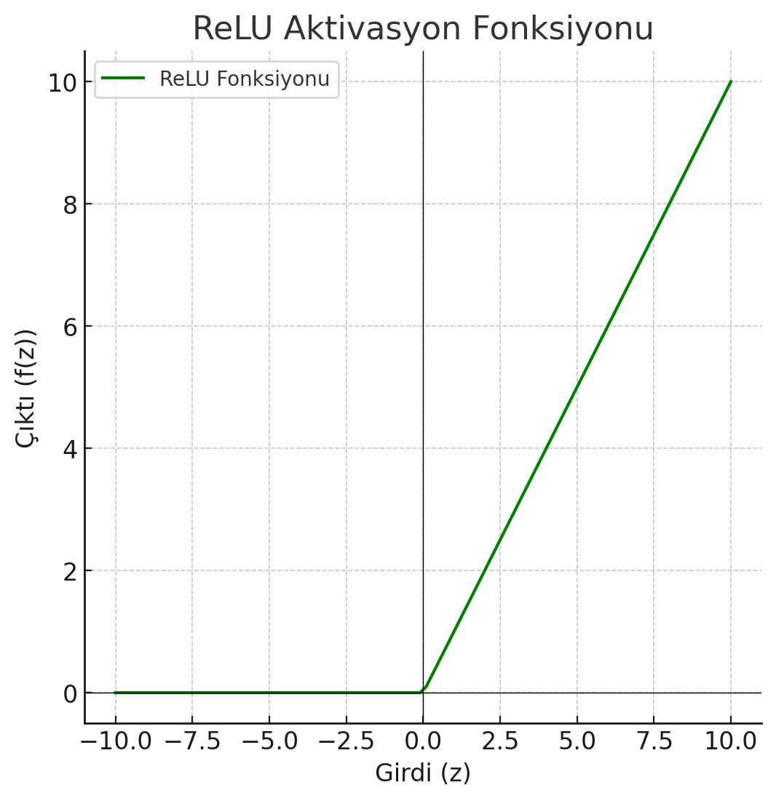

Aktivasyon fonksiyonları, yapay sinir ağlarında her nöronun çıktısını belirleyen fonksiyonlardır. Sinir ağındaki her nöronun aldığı girdi, bu fonksiyon yardımıyla işlenir ve bir sonraki katmana aktarılır. Doğru aktivasyon fonksiyonunu seçmek, modelin öğrenme kapasitesini ve doğruluğunu büyük ölçüde etkiler.
Sigmoid fonksiyonu, her girdiyi [0, 1] aralığına sıkıştırır. Genellikle iki sınıflı sınıflandırma problemlerinde kullanılır. Matematiksel olarak şu şekilde tanımlanır:
f(z) = 1 / (1 + exp(-z))
Fonksiyonun grafiği aşağıda verilmiştir:
ReLU fonksiyonu, yapay sinir ağlarında negatif girdilere 0, pozitif girdilere ise girdi değerini döner. Matematiksel olarak şu şekilde tanımlanır:
f(z) = max(0, z)
Fonksiyonun grafiği aşağıda verilmiştir:
Tanh fonksiyonu, sigmoid fonksiyonuna benzer ancak çıktıyı [-1, 1] aralığında sınırlar. Bu fonksiyon negatif ve pozitif değerleri daha güçlü bir şekilde ayırt eder.
f(z) = (exp(z) - exp(-z)) / (exp(z) + exp(-z))
Fonksiyonun grafiği aşağıda verilmiştir:
Leaky ReLU, ReLU fonksiyonuna benzer ancak negatif girdiler için küçük bir eğim kullanır. Bu, dead ReLU problemini azaltmaya yardımcı olur.
f(z) = z, z > 0
f(z) = alpha * z, z <= 0
Fonksiyonun grafiği aşağıda verilmiştir:
Softmax fonksiyonu, çok sınıflı sınıflandırma problemlerinde kullanılır. Her sınıf için bir olasılık değeri döner ve bu olasılıklar 1'e tamamlanır.
f(z)_i = exp(z_i) / Σexp(z_j)
Fonksiyonun grafiği aşağıda verilmiştir:
Aktivasyon fonksiyonları, yapay sinir ağlarında çok önemli bir yere sahiptir. ReLU, sigmoid, tanh ve softmax gibi fonksiyonlar, modelin nasıl öğrenip sonuç ürettiğini doğrudan etkiler. Her fonksiyonun doğru yerde kullanılması, modelin verimliliğini artırabilir.
Sigmoid fonksiyonu, çıktıyı [0, 1] aralığına sıkıştırır. Aşağıda bu fonksiyonun Python ile nasıl hesaplanacağı gösterilmiştir:
import numpy as np
# Sigmoid fonksiyonunu tanımla
def sigmoid(z):
return 1 / (1 + np.exp(-z))
# Z değerleri (-10, 10 arası)
z_values = np.linspace(-10, 10, 100)
sigmoid_values = sigmoid(z_values)
# Sonuçları yazdır
print(sigmoid_values)
ReLU fonksiyonu, negatif girdiler için sıfır döner, pozitif girdiler için girdiyi döner. Aşağıda Python kodu ile ReLU fonksiyonu hesaplanmıştır:
import numpy as np
# ReLU fonksiyonunu tanımla
def relu(z):
return np.maximum(0, z)
# Z değerleri (-10, 10 arası)
z_values = np.linspace(-10, 10, 100)
relu_values = relu(z_values)
# Sonuçları yazdır
print(relu_values)
Tanh fonksiyonu, girdiyi [-1, 1] aralığında sınırlar. Aşağıda Python ile tanh fonksiyonunun nasıl çalıştığı gösterilmiştir:
import numpy as np
# Tanh fonksiyonunu tanımla
def tanh(z):
return np.tanh(z)
# Z değerleri (-10, 10 arası)
z_values = np.linspace(-10, 10, 100)
tanh_values = tanh(z_values)
# Sonuçları yazdır
print(tanh_values)
Leaky ReLU fonksiyonu, negatif girdiler için küçük bir eğim kullanır. Aşağıda bu fonksiyonun Python ile nasıl hesaplanacağı gösterilmiştir:
import numpy as np
# Leaky ReLU fonksiyonunu tanımla
def leaky_relu(z, alpha=0.01):
return np.where(z > 0, z, alpha * z)
# Z değerleri (-10, 10 arası)
z_values = np.linspace(-10, 10, 100)
leaky_relu_values = leaky_relu(z_values)
# Sonuçları yazdır
print(leaky_relu_values)
Softmax fonksiyonu, çok sınıflı sınıflandırmada kullanılır ve olasılık dağılımı döner. Aşağıda Python ile softmax fonksiyonunun nasıl çalıştığı gösterilmiştir:
import numpy as np
# Softmax fonksiyonunu tanımla
def softmax(z):
exp_z = np.exp(z - np.max(z)) # Stabilize etmek için z'den max(z) çıkarılır
return exp_z / np.sum(exp_z)
# Z değerleri (örnek sınıf değerleri)
z_values = np.array([1.0, 2.0, 3.0, 4.0, 1.0])
softmax_values = softmax(z_values)
# Sonuçları yazdır
print(softmax_values)
Softmax fonksiyonu, çok sınıflı sınıflandırmada kullanılır ve olasılık dağılımı döner...
# Python kodu burada...